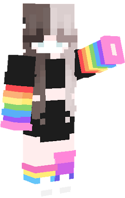

Bumblebee is a valued member of our virtual restaurant and Minecraft server. As one of the founders of the restaurant, she has played a crucial role in bringing our community together and creating a welcoming and fun atmosphere for all of our guests. As a skilled Minecraft player and builder, Bumblebee has created some of the most impressive and unique structures in our server, including the restaurant itself and various decorations and attractions throughout the world.

Leo Restaurant Mascot
Leo is our mascot and he is a special part of our virtual restaurant and Minecraft server. In fact, the restaurant is named after him! As a skilled gamer and dedicated member of our community, Leo brings his passion for the restaurant and his love for Bumblebee to every aspect of our virtual world. His playful and mischievous nature is reflected in the whimsical and creative structures he builds on our server, from a sprawling treehouse village to a secret underground lair. His commitment to our community is unwavering, and his infectious enthusiasm inspires us all. We are grateful to have Leo as part of our team and look forward to seeing what he will create next on our server.
Chef
Certainly! The chef behind our delicious virtual restaurant is known simply as Chef Anonymous. Despite their anonymity, their talent and expertise in the kitchen are clear in every dish they create. From expertly crafted sushi rolls to mouth-watering bento boxes, Chef Anonymous brings a level of skill and creativity that is unmatched. Their attention to detail and dedication to quality ensures that every meal is a work of art, and every bite is bursting with flavor.
Our Story
Our Minecraft virtual restaurant was started with the idea of bringing together long-distance friends or people from around the world in a virtual setting. Bumblebee, the creator of the restaurant, wanted to give her long-distance friends a place to hang out and have fun together. Thus, the idea for the restaurant was born.
The name of our restaurant comes from Bumblebee's pet fox in Minecraft, who has become the mascot of the restaurant. At our virtual restaurant, we only use the best ingredients in our dishes. Our anonymous chef works tirelessly to create delicious and unique dishes that bring joy to our customers through their taste buds.
Bumblebee and our chef work hard to keep the restaurant running smoothly and to make sure every customer has a memorable experience. We are dedicated to providing a fun and welcoming environment where people can connect and enjoy good food together, no matter where they are in the world. Come and join us at our virtual restaurant today!